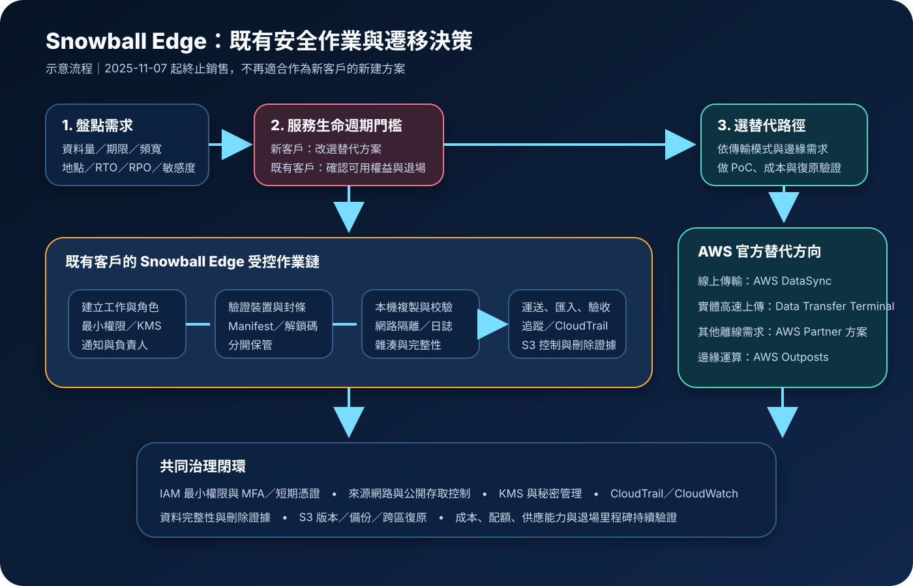

AWS Snowball Edge：終止銷售後的既有作業與遷移
AWS Snowball Edge 曾以可運送的強固裝置承接大量離線資料搬移與有限邊緣運算。AWS 已公告自 2025 年 11 月 7 日起終止銷售，且不再提供給新客戶；因此目前的重點不是把它列為一般新建方案，而是讓既有客戶安全完成剩餘工作、保存資料完整性與保管證據，並依線上、實體上傳或邊緣運算需求轉向替代方案。
作者：Dr. William｜查閱與發布：2026-11-26
服務定位
AWS Snowball Edge 是具備本機儲存與運算能力的實體裝置，可在網路頻寬不足、傳輸期限受限或工作地點連線不穩定時，先於本地寫入資料或執行支援的邊緣工作，再透過承運商把裝置送回 AWS 完成匯入。裝置的強固外殼、電子墨水標籤、工作綁定、Manifest、解鎖碼與加密機制，構成離線資料移動的技術與物流控制鏈。
截至本文查閱日，Snowball Edge 已不是新客戶可採購的新建服務。本文保留基礎介紹，是為了協助既有環境辨識責任邊界、完成安全操作與規劃遷移，而不是把已終止銷售的裝置當成長期標準架構。任何新需求都應先驗證替代方案覆蓋度、可用區域、設施位置、傳輸期限、成本及合規條件。
核心概念
工作、裝置與資料路徑
- 工作（job）：定義資料匯入或其他操作、目標資源、IAM 角色、KMS 金鑰、通知與運送資料。
- 裝置：每台裝置與特定工作綁定；不應把裝置視為一般可自由重複使用的外接儲存。
- Manifest 與解鎖碼：兩者共同用於驗證及解鎖，應分開保存、限制存取並在使用後撤除本機副本。
- 本機介面：透過 Snowball Edge Client、支援的資料介面或本機運算能力操作；版本與相容性需在工作前驗證。
- 物流鏈：裝置交付、保管、封條、場地、承運、追蹤、回運與 AWS 收件都是安全邊界的一部分。
生命週期與替代方案
- 終止銷售：2025-11-07 起裝置 end of sale，新客戶不可把它列入採購基線。
- 線上傳輸：AWS 官方建議評估 DataSync，並依頻寬、可靠度、資料量與期限判斷。
- 實體高速上傳：可評估 Data Transfer Terminal；使用者攜帶自己的儲存設備至指定設施完成上傳。
- 其他離線需求：需比較 AWS Partner 方案的國家、容量、保管、刪除證據與責任條款。
- 邊緣運算：AWS 官方將 Outposts 列為替代方向，但其固定部署、連線、容量與營運模型和可運送裝置不同。
適合與不適合的使用情境
僅適合既有客戶在可用權益內延續的情境
- 已核准且尚可下單的既有 Snowball Edge 資料匯入工作，需要在退場前完成。
- 既有邊緣工作負載仍依賴裝置，並有明確移轉計畫、替代平台測試與終止日期。
- 線路無法在期限內搬移大量資料，且 AWS 已確認該帳戶、地區與工作類型仍可使用服務。
- 組織能管理實體場地、裝置保管、雙人覆核、運送追蹤、完整性驗證與稽核證據。
不適合或不能單獨完成
- 新客戶或全新專案；服務已終止銷售，不應以舊文件建立不可採購的目標架構。
- 每日持續增量同步或固定混合資料管線；應優先比較 DataSync、Direct Connect、Storage Gateway 或其他線上方案。
- 只需要把少量資料傳入 S3，且現有加密網路可在期限內完成；裝置與物流作業可能增加成本與風險。
- 需要長期固定的 AWS 邊緣基礎設施；應比較 Outposts 或其他現行邊緣方案。
- 無法提供安全收貨區、裝置保管人、監視、封條檢查、電力、網路隔離與運送交接程序。
- 把裝置加密誤認為已完成來源資料分類、端點防護、S3 權限、備份與跨區復原。
示意故事案例：既有客戶完成最後一批影像歸檔並退場
以下為示意案例，不代表特定企業或正式部署。 一家媒體公司是 Snowball Edge 既有客戶，過去以裝置將拍攝現場累積的高容量原始影像匯入 Amazon S3。公司已收到內部退場要求，準備完成最後一批 180 TB 歷史素材後，將後續流程改為線上增量傳輸與必要時的實體上傳設施。
團隊先向 AWS 確認帳戶仍可建立對應工作，並把 Snowball Edge 視為一次性受控變更。雲端管理人員使用聯合身分、MFA 與短期角色建立工作；工作角色只可寫入指定 S3 bucket 與 prefix，KMS key policy 僅允許核准角色和服務路徑。Manifest 與解鎖碼由兩位不同保管人取得，透過核准通道分開交付，任何文件、工單、聊天或程式碼都不保存可重用的認證值。
裝置抵達後，兩人共同檢查外觀、電子墨水標籤、封條與工作識別，將裝置放入無公網路由的隔離 VLAN。資料複製前後產生檔案清單、大小與雜湊報告；工作日誌集中送往受控位置。回運時記錄序號、時間、承運追蹤與交接人。AWS 匯入完成後，團隊比對 S3 物件數、大小、抽樣雜湊、加密狀態、版本與 CloudTrail 證據，再依資料保留政策建立跨區副本。
退場方案分成兩條：每日增量影像以 DataSync 經專線傳輸；遇到網路無法支撐的一次性大量搬移時，另行評估 Data Transfer Terminal 的可用地點、預約時段、攜帶媒體與人員進場規則。裝置型邊緣處理則以 Outposts 或其他平台進行 PoC，不直接假設功能、斷線容忍度與成本可一比一替代。

建置或運作流程
- 確認需求屬於新專案或既有客戶延續；新客戶直接進入替代方案評估，不建立 Snowball Edge 採購假設。
- 由帳戶與合約負責人向 AWS 確認可用資格、地區、工作類型、裝置配置、供應時間與退場時程。
- 盤點來源系統、資料所有權、資料量、單檔大小、檔案數、變更率、期限、頻寬、跨境與保留要求。
- 定義 RTO、RPO、可接受停機、可重送範圍、完整性驗證方法與失敗回復方案。
- 比較 DataSync、Data Transfer Terminal、AWS Partner 方案、Direct Connect、Storage Gateway 與 Outposts，不以歷史習慣取代選型。
- 既有 Snowball Edge 工作由聯合身分、MFA 與短期角色建立；分離申請、核准、KMS、S3 與稽核權限。
- 工作 IAM 角色只允許必要 bucket、prefix、KMS key 與操作；bucket policy 同時限制未加密、錯誤網路或未核准主體。
- 選擇客戶管理 KMS 金鑰時，明確設定 key policy、停用、刪除保護、管理者、使用者與稽核流程。
- 通知主題只加入必要人員，避免在通知、工單、文件與聊天中傳遞 Manifest、解鎖碼或任何認證值。
- Manifest 與解鎖碼分開取得、分開保管，設定最短存續時間；下載端點必須受管並留存存取紀錄。
- 裝置到貨時雙人核對工作識別、外觀、封條、標籤、序號、承運資訊與任何異常，異常時停止使用並通報。
- 將裝置接入隔離 VLAN，只允許必要管理端與資料來源；禁止不必要的公網路由、橫向連線與共用管理帳號。
- 驗證 Snowball Edge Client 或其他本機工具版本、雜湊、來源、相容性與最小權限執行環境。
- 複製前建立來源基線；複製後比對物件數、容量、錯誤清單與雜湊，對失敗項目採冪等重試。
- 對本機運算或長期工作啟用必要日誌、容量與健康監控，避免裝置填滿、時鐘偏差或斷電造成未察覺的資料缺口。
- 回運前確認所有程序停止、資料寫入完成、裝置安全關機、電子墨水標籤更新且舊標籤已移除。
- 記錄裝置離場、交接人、承運追蹤、時間與例外，確保運送保管鏈可與工作紀錄對應。
- AWS 匯入後驗證 S3 目的地、Object Ownership、Block Public Access、版本、生命週期、KMS、物件數與完整性。
- 啟用並集中保存 CloudTrail 管理事件；依稽核需求評估 S3 資料事件、CloudWatch 告警與 Security Hub 整合。
- 對關鍵資料建立 AWS Backup、S3 版本、Object Lock 或跨區複寫，並實際演練還原與第二區域存取。
- 完成最後工作後撤銷暫時角色、通知訂閱、Manifest、解鎖資料、本機工具與例外網路規則。
- 為替代方案執行 PoC，比較實測吞吐、重試、完整性、費用、營運人力、設施可達性與災難復原。
成本、可用性與維運考量
Snowball Edge 的歷史費用模型包含每次工作的服務費、超出內含天數的額外日費、運送與依情境產生的資料傳輸或運算費用。終止銷售後，既有客戶不能只依舊價格頁做預算；還要確認裝置供應、工作可建立性、運送地區、承運時程、退場期限與支援條件。延誤、重送、裝置等待、跨境報關、現場人力與完整性驗證都應納入總成本。
離線裝置可降低長距離頻寬瓶頸，但整體完成時間包含申請、供應、運送、現場複製、回運、AWS 匯入與驗收。裝置在途或現場不可用時，沒有即時替代容量；大量工作應設計批次邊界、重送策略與原始資料保留，避免單一裝置失敗造成不可逆缺口。
替代方案的成本模型不同。DataSync 需計入任務資料量、網路、代理主機、Direct Connect 與目的儲存；Data Transfer Terminal 需計入設施預約、使用時間、網路傳輸、差旅、人員與自有媒體；Outposts 涉及固定容量、合約、場地、電力、網路與營運責任。比較時應使用同一資料量、期限、重試、驗證與人力假設。
AWS Snowball Edge 特有資安風險與控制
- 已終止銷售仍被列入新架構：在架構審查、服務目錄與 IaC 範本加入生命週期門禁，新專案改走現行替代方案。
- 可用資格與裝置供應不確定：每次工作前由 AWS 書面確認，設置最後可接受下單日與替代路徑。
- Manifest 與解鎖碼同處保存：採雙人分管、不同通道、短期保存、受管端點與使用後刪除。
- 裝置被替換或篡改：到貨與回運均核對標籤、工作識別、序號、封條、外觀和承運紀錄；異常立即隔離。
- 現場裝置被未授權接觸：使用門禁、監視、上鎖區域、保管人清冊與進出紀錄，不放置於一般辦公區。
- 本機網路造成橫向移動：放入隔離 VLAN，以 ACL、防火牆與最小允許清單限制管理端、來源端與必要連接埠。
- 本機工具被冒用：從官方來源取得並驗證版本，限制執行主機、管理權限、檔案落地與日誌輸出。
- 工作 IAM 角色權限過廣：限制 S3 bucket、prefix、KMS key、API 與條件；管理控制面採 MFA 與短期憑證。
- KMS 政策造成跨工作解密：分離金鑰管理與使用權限，限制 key policy、grant、服務條件與刪除排程。
- 解鎖資料或認證值進入日誌：禁止輸出敏感值，集中秘密於 Secrets Manager／Parameter Store；必要內容以 [REDACTED] 顯示。
- 來源資料在複製前已被竄改：建立來源快照、唯讀基線、檔案清單與雜湊，保留產生時間與工具版本。
- 複製成功訊息被誤當完整性證明：比對物件數、容量、錯誤清單與抽樣或全量雜湊，對重試結果再次驗證。
- 資料匯入錯誤 bucket 或 prefix：工作建立與驗收採雙人覆核，bucket policy 限制角色、加密、網路與物件所有權。
- CloudTrail 只記錄控制面：結合工作日誌、承運追蹤、現場保管紀錄及必要的 S3 資料事件形成證據鏈。
- 回運途中保管鏈中斷：保存交接時間、承運追蹤與異常程序；原始資料在驗收前不得刪除。
- 裝置資料刪除被過度假設：保留 AWS 官方處理說明與工作完成證據，同時依自身合規要求評估是否足夠。
- 替代方案未驗證便切換：以 PoC 驗證吞吐、重試、加密、稽核、故障、費用與復原，不以產品名稱推定等價。
- 只完成搬移、沒有復原：目的端建立版本、備份、不可變保留或跨區副本，並依 RTO／RPO演練還原。
共同責任邊界
AWS 負責 Snowball Edge 服務及裝置設計、AWS 管理的基礎設施、支援的加密與工作控制能力、裝置寄送流程，以及裝置回到 AWS 後的服務處理。AWS 也負責公告服務生命週期與提供官方替代方向，但不替客戶完成資料分類、現場保管、權限設計、來源完整性、目的端治理或業務持續計畫。
客戶負責確認服務仍可用、選擇適合的現行替代方案、IAM 最小權限、MFA／短期管理憑證、網路隔離、公開存取限制、KMS 政策、Secrets Manager／Parameter Store、CloudTrail／CloudWatch、Manifest 與解鎖碼分管、裝置場地與保管鏈、資料完整性、S3 設定、備份與跨區復原。裝置具備加密與防篡改設計，不代表現場、來源資料、IAM、目的 bucket 與退場流程已自動安全。
上線、運作與退場可執行檢查清單
- □ 已確認需求是新專案或既有客戶延續，新專案未把 Snowball Edge 列為可採購基線。
- □ AWS 已確認帳戶、區域、工作類型、裝置配置、供應與最後使用時程。
- □ DataSync、Data Transfer Terminal、Partner 方案與 Outposts 已依需求完成比較。
- □ 資料量、檔案數、變更率、期限、頻寬、資料主權、RTO 與 RPO 已量化。
- □ 工作建立採聯合身分、MFA、短期角色與雙人核准。
- □ IAM 角色只允許指定 bucket、prefix、KMS key 與必要操作。
- □ S3 Block Public Access、bucket policy、Object Ownership、版本與生命週期已設定。
- □ KMS key policy、grant、管理者、使用者、停用與刪除流程已測試。
- □ Manifest 與解鎖碼分開保管、分開傳遞，且使用後有撤除程序。
- □ 文件、工單、程式碼、日誌與聊天沒有 credential、Access Key、Secret Key、Token、密碼或 cookie。
- □ 收貨區、門禁、監視、保管人、封條檢查與異常通報程序已就緒。
- □ 裝置位於隔離 VLAN，只有核准管理端、資料來源與必要連接埠可達。
- □ Snowball Edge Client 或本機工具來源、版本、雜湊與相容性已驗證。
- □ 複製前後的物件數、容量、錯誤清單與雜湊驗證方式已定義。
- □ 原始資料在 AWS 匯入與完整性驗收前不會刪除。
- □ 裝置離場、承運交接、追蹤、回運與例外均有可稽核紀錄。
- □ CloudTrail 管理事件、工作紀錄與必要 S3 資料事件集中保存。
- □ 匯入後已驗證目的地、KMS 加密、物件所有權、版本、數量與完整性。
- □ 關鍵資料具備備份、不可變保留或跨區副本，且還原演練通過。
- □ 暫時角色、Manifest、解鎖資料、通知訂閱與例外網路規則已撤除。
- □ 替代方案 PoC 已以實測吞吐、錯誤率、費用、人力與復原結果驗收。
- □ 服務退場負責人、里程碑、最後工作、風險接受與完成證據已核准。
AWS 官方一手來源
- AWS Snowball Edge availability change（查閱：2026-11-26）
- What is Snowball Edge?（查閱：2026-11-26）
- Unlocking the Snowball Edge device（查閱：2026-11-26）
- Security in AWS Snowball Edge（查閱：2026-11-26）
- Logging Snowball Edge API calls with AWS CloudTrail（查閱：2026-11-26）
- AWS Snowball Pricing（查閱：2026-11-26）
- AWS DataSync（查閱：2026-11-26）
- AWS Data Transfer Terminal（查閱：2026-11-26）
- AWS Outposts（查閱：2026-11-26）
- AWS Shared Responsibility Model（查閱：2026-11-26）
內容說明
本文依 2026-11-26 可查閱的 AWS 官方文件整理。Snowball Edge 已於 2025-11-07 終止銷售且不再提供給新客戶；既有客戶的可用資格、工作類型、裝置供應、區域、價格與退場條件可能持續調整。任何剩餘工作或替代方案導入，都應以 AWS 對目標帳戶與地區的最新確認、實測、資安審查、費用估算及復原演練為準。